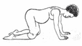
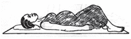
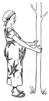
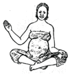

EXERCISE
Here are some exercises you can encourage your clients to do
Pelvic Rock
Strengthens leg muscles

- Get down on your hand and knees
- Pull in your abdomen and lift your buttocks. Hold for a count of 5
- Gently relax your abdomen and buttocks, allowing the curve of your back to return
- Repeat 5-6 times.
Head and Shoulder Lift
Strengthens muscles in the abdomen

- Lie on your back with your knees bent, feet flat on the floor, and your arms at sides
- Raise your head and shoulders and tighten your abdominal muscles. Hold for count of 5. Do not hold your breath.
- Lie back and relax.
- Repeat 5-10 times.
Squat
Strengthens leg muscles

- Stand while holding on to something to help you keep your balance. Keep feet apart.
- Slowly bend your knees, keeping your back straight, and keeping your knees and feet apart.
- Rise slowly, keeping hold of the object for balance.
- Repeat 3-5 times.
Rib Cage Lift
(Strengthens leg muscles and makes it easier to breathe)

- Sit with your legs crossed.
- Curve your arm over your it, and then return to the original position
- Repeat 4-5 times.
Previous
Next